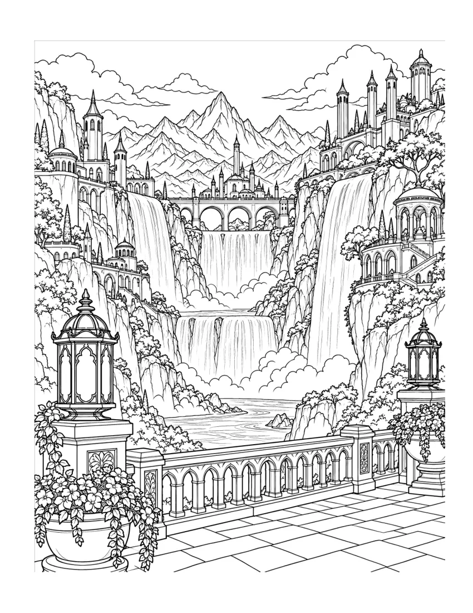

U8 Football Training Session for a Small Squad: A Practical 60-Minute Plan
Only five or six children at training? Use this 60-minute U8 plan for dribbling games and small-sided play, with an eight-player option and free A4 session card.
Word searches for curious minds, colouring for creative moments, practical football coaching guides and thoughtful gifts. Find your kind of book and see real pages before buying on Amazon.
 From our collectionHigh Fantasy RealmsSee the artwork
From our collectionHigh Fantasy RealmsSee the artwork Explore the collections of published books.

60 extra-large-print British word searches in four gentle levels, with familiar UK themes, optional conversation prompts and answers.
See inside
A daily journal for reflecting on bedtime and sleep habits.
See inside
100 large-print word searches exploring American everyday life from the 1950s to the 1980s, with 25 puzzles per decade.
See inside
Dry workplace humour about the things you would like to say and the professional replies you actually send. A compact gift for a colleague who knows the feeling.
See insideEvery available sample on this site comes from the actual finished interior. Explore genuine pages, then follow the book’s link to Amazon when you’re ready.
Browse books